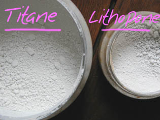

Le gesso : histoire et
fabrication maison
Avant de parler du gesso, précisons,
à l'attention des personnes qui commencent à préparer elles-mêmes leurs toiles,
qu'il est indispensable d'effectuer en premier lieu un encollage (lire l'article
Enduction des toiles). L'erreur consistant
à appliquer directement du gesso sur une toile non encollée est courante.
|
Histoire
Les anciens gessos
Gesso, dans plusieurs langues européennes, signifie plâtre. Le
plâtre, les
marnes (blancs naturels - voir
photo
ci-dessous, blanc de Meudon) et craies
(voir absolument
terres
blanches), mêlés à des colles (colle
de peau, tempera,
caséine) ont servi longtemps comme
apprêts blancs ou comme badigeons, tant en
peinture artistique que décorative, en dorure et en ébénisterie.
Il existait deux types de gessos : le mélange plâtre +
colle, plutôt dur, relativement difficile à polir, et le mélange craies ou marnes + colle,
encore courant, qui a l'avantage de pouvoir être poli et lustré avec une
finesse inégalable en plus de présenter des temps de séchage extrêmement
courts.
Rechercher la finesse ou
accentuer le grain
La finesse, la finition impeccable du gesso a été très recherchée dans
le passé, alors que les supports étaient durs le plus souvent.
|
Sommaire
Histoire
*
Les anciens gessos
*
Rechercher la finesse ou accentuer le grain
*
Depuis la toile
*
Histoire de FONDS
*
Le
gesso de Cennini
Gessos contemporains :
les pigments
Gessos contemporains :
les liants
*
Produits manufacturés
*
Fabrication maison
Gesso
et peintures grasses : les contraintes
Application du gesso |
On mentionne des procédés très étonnants, notamment celui du
polissage au fusain que nous n'exposerons pas ici, invitant les lecteurs
intéressés à la lecture de Cennini. Les
outils employés aujourd'hui pour le polissage vont de la laine d'acier extra-fine au papier
de verre le plus fin. Le chiffon, en finition, est indispensable. De
plus, il faut signaler qu'il est possible aussi de lustrer au chiffon des gessos
modernes à base d'acrylique. Mais de toute manière, la finesse ne doit pas être
recherchée à tout prix : le gesso peut aussi être appliqué de sorte à conserver,
voire accentuer les reliefs du support au lieu de les araser. Il faut alors
jouer sur la consistance de la pâte et l'outil
d'application qui ne doit pas être arasant, ainsi que sur la manière d'appliquer
le gesso. En effet, un premier frotté, par exemple,
peut accentuer le relief.
Depuis la toile
L'avènement de la toile a disqualifié les produits trop fragiles, trop lourds ou difficiles à enduire correctement sur
de grandes surfaces : plâtre et caséine ont été de fait réservés aux supports durs.

Depuis ce moment, les gessos pour toiles ont longtemps été liés
avec de l'huile, ce qui n'allait pas sans poser de sérieux problèmes au delà
du temps de séchage déjà extrêmement long, étant
donné la nécessité de poser toujours des couches grasses sur des couches
maigres (règle du gras sur maigre) : le tableau démarrait sur une couche
déjà grasse.
Les blancs naturels (voir terres blanches)
restaient assez utilisés. On mentionne
cependant l'emploi
très répandu de
céruse, aujourd'hui nommée "blanc de plomb"
ou "blanc d'argent", en proportion de l'ordre de 70% voire davantage. Ce pigment - par
ailleurs trop gras et glissant - est un toxique mortel, de surcroît polluant.
Dans le passé, l'usage de cette substance se justifiait
notamment par le manque de pigments blancs non alcalins (voir
ci-dessous Contraintes). Mais les recettes conseillant encore son emploi au
XXIème siècle sont des archaïsmes dangereux, alors que les produits qui sont
maintenant à notre disposition ne posent pas ces problèmes et présentent de
plus des avantages notables.
Aujourd'hui encore, certains peintres réalisent des gessos avec une
peinture à l'huile. Le temps de séchage est de l'ordre de deux ans !
Histoire de FONDS
Lire l'article sur les imprimatures.
Comme dans le passé européen, différents peuples pratiquent encore
des imprimatures sombres et se passent de gesso (exemple : la peinture
balinaise).
Mais dans l'Occident contemporain, le fond blanc est souvent une étape nécessaire dans la
réalisation d'imprimatures
: la couleur de celles-ci est nettement plus soutenue lorsqu'elle est posée sur
une couche blanche, surtout lorsque l'on souhaite qu'elle soit lumineuse.
Ainsi, l'emploi progressif d'imprimeures
plus claires qu'aux périodes Renaissance et ultérieures a pu contribuer
au retour du gesso - laissé blanc ou utilisé comme sous-couche - autant que le besoin de lumière lié à la manière de
peindre elle-même (hypothèse).
Le gesso de Cennini
C'est un procédé de ce célèbre auteur du
XIVème siècle, qui nous semble aujourd'hui assez original. Il
était encore utilisé en France au XXème siècle.
Il s'agit "d'extraire la chaleur" d'un plâtre (gesso) bien chargé
en gypse, comme le plâtre de Paris, par trempages
successifs dans l'eau. Les blocs solides sont ensuite moulus jusqu'à faire un
pigment qui est utilisé comme une terre blanche.

La technique de la pastiglia, mentionnée par Cennini, consistait à
modeler ou tailler localement ce gesso avant de le peindre ou le dorer.
Note : le gypse étant chargé en soufre, cette recette est à déconseiller aux
peintres utilisant des substances contenant du plomb comme l'huile noire et les
siccatifs, sauf, comme on l'a dit, en passant une couche d'enduit pour isoler
peinture et gesso.
Gessos contemporains
: les pigments
Après une période d'utilisation intensive du blanc
de zinc (encore très présent dans les manuels), en mélange avec des terres
blanches, apparaît au début du XXème siècle le blanc de lithopone,
compromis intéressant, mélange de blanc naturel (baryum) et de
"blanc minéral"
(en fait, du blanc de zinc). Ce dernier sert toujours, depuis des décennies, dans la fabrication des gessos et autres
fonds.

En observant attentivement cette image, surtout vers le
bas des deux pots, on peut comparer la tendance bleue du titane -
pourtant réputé jaune selon certains auteurs - à la
neutralité du blanc de lithopone, combinaison de zinc, bleu, et de baryum,
terre blanche plus chaude.
En ce qui concerne la fabrication d'un gesso en atelier, il existe
aujourd'hui plusieurs écoles :
*
le "tout lithopone", toujours très valable.
Le conseil récurent de mêler
ce pigment à du blanc de zinc est un peu absurde car il en contient déjà,
d'autant plus que ledit blanc de zinc est peu couvrant. Sa présence dans le
lithopone est justifiée par la nécessité de compenser la teinte chaude du
baryum.
Les avantages du "tout lithopone" sont la luminosité et une assez
bonne neutralité chromatique.
Son coût est généralement plus élevé que celui des terres blanches pures,
mais il est moins élevé que le titane.
Un autre bémol : la présence de souffre dans ce pigment implique
certaines précautions : si vous fabriquez un gesso trop poreux, la
combinaison avec le plomb éventuellement contenu dans vos couleurs et
médiums peut provoquer un noircissement. Quel que soit votre liant
pour le gesso, abusez-en : il isolera le sulfure de zinc et le sulfate de
baryum constituant le blanc de lithopone. N'hésitez pas à poser une
surcouche d'enduit par-dessus votre gesso.
*
le "tout naturel", consistant en l'emploi massif de blancs
naturels, marnes et craies, soit les terres
blanches. Les avantages de cette solution sont leur maigreur et leur faible
coût. Vus sous un autre angle, ils sont ternes, grisâtres, pâteux, un peu
trop alcalins et trop poreux. Ce
dernier défaut peut être compensé par une surcouche d'enduit (Caparol
®, gélatine ou
autre). En fait, ces ingrédients ne fournissent pas un gesso vraiment blanc,
c'est le principal reproche que l'on peut leur adresser. Depuis longtemps,
il est rare des les employer purs.
*
l'ajout d'un ingrédient contemporain
au gesso "tout naturel". Exemple : une à deux parts de blanc de titane
pour
huit à neuf parts d'un mélange à parts à peu près égales de lithopone et de blancs naturels.
Bénéfice : après la pose de deux couches, si la toile poncée (voir
ci-dessous, Application du gesso) n'a pas
révélé trop de noeuds, vous pouvez vous dispenser de la troisième, ou
bien la diluer beaucoup.
* on mentionne aussi un
mélange
de terres blanches et de blanc de zinc, encore usité. Pourquoi pas ?
Il vaut mieux cependant savoir que le blanc de zinc n'apporte pas grand-chose
- dans le cadre de la préparation d'un gesso -en
comparaison au titane ou même au blanc de lithopone.
*
l'école
de la céruse (mentionnée ci-dessus) a
la vie dure. A ce jour encore, des peintres particulièrement réfractaires
aux problèmes de santé publique et de pollution continuent à employer ce
poison. C'est triste.
*
les produits manufacturés. Voir ci-dessous.
Dans tous les cas (sauf le dernier), n'hésitez pas à forcer un peu la dose de liant lorsque vous préparez les pigments si ceux-ci incluent une importante
proportion de blancs naturels, très poreux, contenant souvent du soufre (donc
peu compatibles avec les siccatifs au plomb -
cf. article) et
souvent un peu trop alcalins - voir ci-dessous. C'est
l'abondance de liants neutres qui explique la bonne conservation de tableaux
réalisés avec des ingrédients pourtant notoirement incompatibles. Mieux encore,
l'isolement
radical gesso/peinture par une surcouche d'enduit pur (c'est-à-dire de liant non
gras pur) est
la seule garantie absolue contre les interactions intempestives entre
gesso et peinture.
Cette remarque ne doit pas être prise en compte si vous souhaitez utiliser
l'huile comme liant de votre gesso, "à l'ancienne". Par contre, elle correspond
parfaitement aux liants et colles aqueux anciens et contemporains.
Gessos contemporains
: les liants
1. produits manufacturés
Pour la toile, les gessos acryliques sont assez convaincants. Il existe de
fort bons produits. Leur composition en pigments est cependant très mal connue
dans l'ensemble. Il faut vraiment se méfier des prix trop attrayants, proposés
parfois par des fabricants assez réputés.
Certains sont corrects tandis que d'autres, beaucoup moins chers, sont de
qualité exécrable, nécessitant une à deux couches supplémentaires par
rapport à la moyenne. Nous ne saurons trop recommander aux visiteurs de Dotapea.com de n'acheter que par petites quantités lorsqu'ils sont en présence de
nouveaux produits qu'il faut tester. Un moyen de deviner si un gesso est trop
dilué est tout simplement de secouer le pot. Un vrai gesso est à demi liquide
et ne doit pas faire de clapotis.
Pour le bois, les gessos acryliques sont également attrayants, mais il
existe certains produits - contenant de la chaux - qui font à la fois emploi de
colle d'enduction et de préparation chromatique (Case-Arti ®), rendant inutile
l'application de couches blanches supplémentaires.
2. fabrication maison
Quel que soit votre choix de pigments, c'est le support qui va définir les
liants que vous pourrez utiliser :
Pour la toile, le liant acrylique ou bien
le Caparol ® - ou un autre liant vinylique -, éventuellement mêlé
d'une petite quantité de liant
méthylcellulosique,
sont des solutions très valables. Trois couches au moins, à chaque fois
poncées (voir ci-dessous Application du Gesso), cela s'avère suffisant. Le temps de séchage
est de l'ordre de quelques heures.
Détaillons cependant les autres possibilités, d'usage assez minoritaire.
L'huile
est généralement déconseillée - sauf intention artistique particulière, auquel
cas elle ne devra être appliquée que sur un encollage bien isolant (du Caparol ®
par exemple), pour éviter le contact huile/toile
- tandis que la chaux est vraiment à éviter : fragile, son ingrédient principal, le
calcium, est déjà présent dans les pigments blancs naturels - ou remplacé par le baryum
ou le silicium aux caractéristiques poreuses alcalinoterreuses
similaires.
La caséine ? Certains fabricants de liants caséine-chaux assurent
que leurs préparations conviennent aux papiers et autres supports souples.
C'est tout simplement faux. Le seul cas où cette affirmation peut être
prise au sérieux, c'est lorsque ledit support souple est marouflé
sur un support dur. La plupart du temps,
il faut adjoindre un assouplissant
tel
que la glycérine
pour travailler sur support souple et le résultat ne peut être garanti.
Pure ou mêlée à la chaux, la caséine présente un avantage : elle est assez
solide pour être polie.
Revenons à l'huile : le gesso à l'huile gagne à être
éventuellement mêlé de siccatif
de Courtrai blanc (1 à 3%) pour éviter des temps de séchage trop longs - ne
pas se faire d'illusion : il faut quand même des années !
En ce qui concerne la dilution, l'essence de pétrole pourrait être
préférée à la térébenthine, un peu grasse pour un apprêt. Il ne faut pas
trop lésiner sur le diluant, sous peine de produire des empâtements aux temps
de séchage... séculaires ! Mieux vaut plusieurs couches à séchage rapide
qu'une seule à séchage interminable.
Remarque : certains peintres cherchent simplement un fond gras, une
imprimature grasse. Dans ce cas, le gesso à l'huile est totalement inutile (il
suffit d'une préparation blanche habituelle suivie d'une préparation colorée
de type gras). Le procédé de préparation et d'application de l'imprimature
grasse est identique à
celui du blanc, exposé ci-dessus.
ATTENTION : l'application d'huile rend assez périlleuse l'emploi de peinture
aqueuse sur les couches ultérieures. Lire l'article consacré à
la règle du gras sur maigre.
La colle de peau (cf.
article) peut être employée en
concentration de 7 à 9 g (moins si un autre liant est utilisé).
Si vous décidez de lui adjoindre des blancs naturels, la proportion est en
principe de 90 g pour 100 g de colle. Si vous préférez le plâtre (en poudre),
elle est de 80 g pour 100 g de colle. En ce qui concerne les autres blancs, nous
manquons de données, mais il y a fort à parier que la proportion de pigment
est d'autant moindre que les alcalinoterreux, soiffards, sont remplacés par les
"blancs minéraux".
Particularité de l'enduction à l'aide de gesso à la colle de peau :
les couches doivent se succéder dans le demi-frais (5 à 12 couches en 2 ou 3
heures). Cela suppose un
réchauffement successif de 5 à 12 quantités de colle distinctes, séparées
d'avance (la qualité de la colle se détériorant avec les réchauffages
successifs, il vaut mieux éviter de réchauffer toujours la même masse).
Le temps de séchage complet suivant cette méthode d'application est de
l'ordre de 10 jours !
Mélanges complexes. On mentionne parfois dans les manuels des mélanges de
gélatines et de caséine glycérinée avec des terres blanches et du blanc de
zinc. Ce genre de recettes a le mérite d'impressionner, mais date
singulièrement ! Face au conservatisme radical de certains auteurs, nous avons
envie de rappeler d'une part que les bonnes colles de peau de lapin ne sont plus très
disponibles
en France, d'autre part qu'il existe des
pigments peu coûteux beaucoup plus opérationnels que le blanc de zinc (le
blanc de titane par exemple).
Il existe aussi des recettes complexes à base de plâtre calciné. Cela
ressemble beaucoup à la fabrication de la chaux vive. La
préparation des surfaces prend des mois et pourrait présenter certains dangers.
Pour le bois, on peut employer un
mélange à base de caséine, de la colle
de peau (concentration de 7 à 9 g), ou de la peinture à l'huile (avec les
mêmes contraintes que celles exposées ci-dessus pour la
toile).
Sur les supports plus durs,
utiliser le plâtre ou mieux : un mortier à la
chaux. Dans ces deux cas, l'adjonction de pigment blanc devient inutile. Les
gessos à la colle de peau et à l'huile peuvent aussi être employés à
condition que l'enduction s'y prête, ce qui n'est pas une mince affaire.
Ces solutions "classiques" présentent des aspects intéressants,
parfois irremplaçables, mais pour le cas général, les liants synthétiques contemporains,
très faciles d'emploi, conviennent parfaitement et avantageusement. Étudiés pour s'adapter à une grande variété de
supports, la plupart (Caparol ®, liants acryliques ou vinyliques) peuvent
parfaitement être employés sur du plâtre ou du bois. Il faut mentionner
cependant la tendance au jaunissement des peintures vinylique. Si le gesso est
appelé à n'être que partiellement recouvert, préférer un produit vinylique.
Pour tous les supports durs, bois ou pierre, la caséine ou le mélange caséine-chaux permettent un "fini" inégalable par
polissage.
Cette opération ne doit être réalisée qu'après une à plusieurs semaines de
séchage.
Gesso et peintures grasses :
les contraintes
Nous avons déjà signalé
ci-dessus l'incompatibilité des pigments
sulfurés avec les produits au plomb, siccatifs de la peinture à l'huile
encore très employés de nos jours.
Mais il existe un autre danger : une
alcalinité excessive du pigment peut provoquer
une saponification de l'huile de lin (ou de
tout autre ester gras) qui occasionne différentes
altérations dont un brunissement important. Ce danger explique le succès
passé de la céruse employée dans la fabrication de gessos à l'huile (voir
ci-dessus).
De nos jours, comme il est devenu très rare de fabriquer
un gesso à base oléagineuse, le danger s'est reporté sur la zone de contact
entre le gesso et la peinture proprement dite. Le remède est simple et c'est
un peu toujours le même : on peut soit noyer le pigment du gesso dans une
importante proportion de liant, soit appliquer une couche isolatrice de
liant pur.
Le liant acrylique, couramment employé par les industriels,
enrobe suffisamment le pigment dans le gesso pour éviter les interactions.
Aussi nos recommandations ne s'appliquent-t-elles qu'aux peintres réalisant
eux-mêmes leur gesso à l'aide d'autres produits.
Par ailleurs, il est
devenu moins courant que dans le passé d'employer des pigments alcalins (les
terres blanches, voir ci-dessus) pour
fabriquer des gessos.
Application du gesso
Lire la section
dédiée à l'application de gessos, modelages et imprimatures dans l'article sur
l'enduction des toiles.
Voir Enduits et apprêts, Les
colles.
Retour
début de page